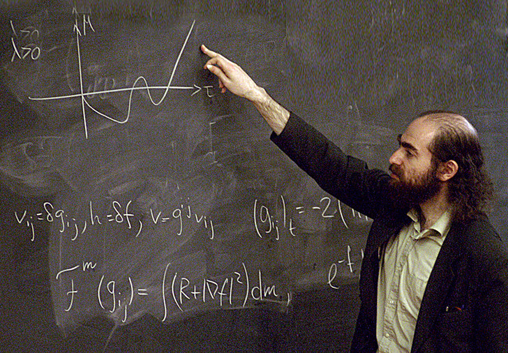

Самые значимые открытия по генетике XXI века
Доказана теорема Пуанкаре
В 2002 году российский математик Григорий Перельман доказал теорему Пуанкаре, одну из семи задач тысячелетия (важные математические проблемы, решение которых не найдено в течение десятков лет). Перельман показал, что исходная трехмерная поверхность (если в ней нет разрывов) обязательно будет эволюционировать в трехмерную сферу. За эту работу он получил престижную «медаль Филдса», аналог Нобелевской премии в математике.

Экспериментально подтверждено существование графена
Его двумерная (толщиной в один атом) кристаллическая решетка проявляет необычные электрофизические свойства. Впервые графен был получен Андреем Геймом и Константином Новоселовым в 2004 году (Нобелевская премия за 2010-й). Его планируется использовать в электронике (в сверхтонких и сверхбыстрых транзисторах), композитах, электродах и т. д. Кроме того, графен — второй по прочности материал на свете (на первом месте — карбин).